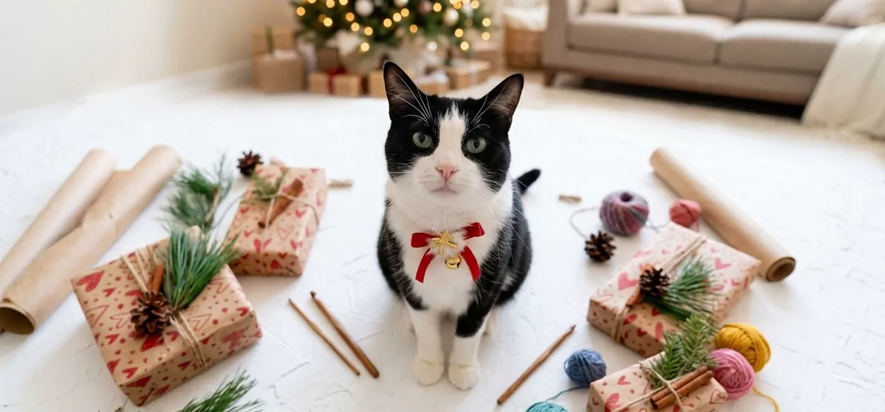

The true story,
and the storybook
One is signed by Elise. The other is signed by Mama Purr & Papa Purr. We keep them on separate shelves — and we love them both.

Our Story — the true one
Purrlight Studio is a small design studio in Pearland, Texas, making heirloom crochet and fabric dolls and keepsakes — designed here and handmade in small batches with our artisan partners in Vietnam. Every piece — a storybook character, a set of feeling-balls, a christening keepsake, a small tuxedo cat named Merlin — is stitched slowly, in small batches, to be given, kept, and passed on.
Merlin is real. He is a four-year-old tuxedo cat who came into my life the year I came to America, and he supervises this studio with the seriousness only a cat can manage. The name Purrlight is his, and someone else’s too: “purr” for the sound that fills our days, and “light” for a husky we loved and lost at five years old. This studio makes things meant to be kept, because we know what it is to want to keep something.
Before Purrlight, I spent about fifteen years in marketing, design, and branding between Vietnam and the US — and, for a while, I was a petsitter. The hands behind our pieces are real too: a fashion designer who turned to fabric dolls, a young mother who crochets, and two university students. Real people, real craft, paid fairly and never rushed.
— Elise Hạnh Nguyễn, founder
Merlin’s World — the storybook
Every studio needs a story. This is the one we tell about Merlin — the way every family tells tales about their cat. It is, happily, a story.
In the storybook, Merlin arrived on a rainy October evening with a tiny green backpack, a hand-stitched yellow beret, and a notebook with three pages of sketches in it. Within a month he had reorganized the living room into what looked suspiciously like a small studio, and by summer he was inspecting every batch of dolls like a studio foreman. We asked him: are these yours, or ours? He blinked very slowly. We took that as a partnership agreement.
He sleeps fourteen hours a day and looks, frankly, useless during most of them. And yet we keep finding small sketches on the counter in the morning — tiny watercolors of birds we didn’t see him watch, once a drawing of a tree that does not grow in Texas. He is, we have come to understand, a cat who takes notes.
Some evenings, when he sits very still on the windowsill in his little beret and stares up at the moon, we like to imagine he is thinking of somewhere far away. We are glad, for now, that he is staying.
— Mama Purr & Papa Purr (and Merlin, who is napping)
What we believe
Small batches over mass production. Keepsakes over clutter. Honest craft — when something is made to order, we say so, and when it takes three weeks, that’s because hands are not machines. Designed in Pearland, Texas · Handmade in Vietnam.